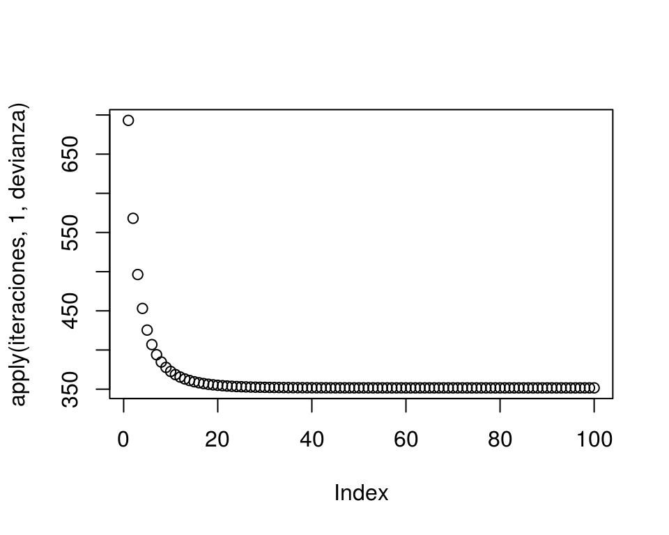
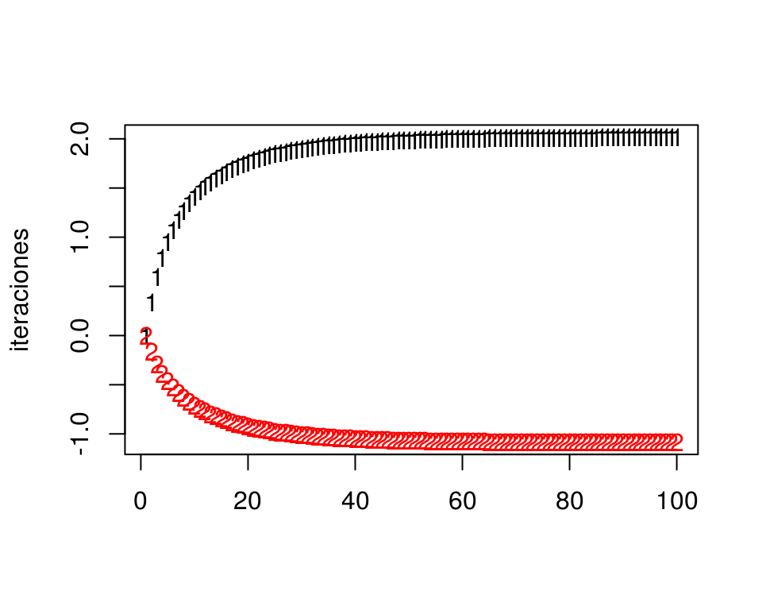

Chapter 3 Regresión logística
3.1 El problema de clasificación
Una variabla \(G\) categórica o cualitativa toma valores que no son numéricos. Por ejemplo, si \(G\) denota el estado del contrato de celular de un cliente dentro de un año, podríamos tener \(G\in \{ activo, cancelado\}\).
En un problema de clasificación buscamos predecir una variable respuesta categórica \(G\) en función de otras variables de entrada \(X=(X_1,X_2,\ldots, X_p)\).
Ejemplos
Predecir si un cliente cae en impago de una tarjeta de crédito, de forma que podemos tener \(G=corriente\) o \(G=impago\). Variables de entrada podrían ser \(X_1=\) porcentaje de saldo usado, \(X_2=\) atrasos en los úlltimos 3 meses, \(X_3=\) edad, etc
En nuestro ejemplo de reconocimiento de dígitos tenemos \(G\in\{ 0,1,\ldots, 9\}\). Nótese que los` dígitos no se pueden considerar como valores numéricos (son etiquetas). Tenemos que las entradas \(X_j\) para \(j=1,2,\ldots, 256\) son valores de cada pixel (imágenes blanco y negro).
En reconocimiento de imágenes quiza tenemos que \(G\) pertenece a un conjunto que típicamente contiene miles de valores (manzana, árbol, pluma, perro, coche, persona, cara, etc.). Las \(X_j\) son valores de pixeles de la imagen para tres canales (rojo, verde y azul). Si las imágenes son de 100x100, tendríamos 30,000 variables de entrada.
¿Qué estimar en problemas de clasificación?
En problemas de regresión, consideramos modelos de la forma \(Y= f(X) + \epsilon\), y vimos que podíamos plantear el problema de aprendizaje supervisado como uno donde el objetivo es estimar lo mejor que podamos la función \(f\) mediante un estimador \(\hat{f}\). Usamos entonces \(\hat{f}\) para hacer predicciónes. En el caso de regresión:
- \(f(X)\) es la relación sistemática de \(Y\) en función de \(X\)
- Dada \(X\), la variable observada \(Y\) es una variable aleatoria (\(\epsilon\) depende de otras variables que no conocemos)
No podemos usar un modelo así en clasificación pues \(G\) no es numérica. Sin embargo, podemos pensar que \(X\) nos da cierta información probabilística acerca de las clases que pueden ocurrir:
- \(P(G|X)\) es la probabilidad condicional de observar \(G\) si tenemos \(X\). Esto es la información sistemática de \(G\) en función de \(X\)
- Dada \(X\), la clase observada \(G\) es una variable aleatoria (depende de otras variables que no conocemos).
En analogía con el problema de regresión, quisiéramos estimar las probabilidades condicionales \(P(G|X)\), que es la parte sistemática de la relación de \(G\) en función de \(X\).
Normalmente codificamos las clases \(g\) con una etiqueta numérica, de modo que \(G\in\{1,2,\ldots, K\}\):
Ejemplo
(Impago de tarjetas de crédito) Supongamos que \(X=\) porcentaje del crédito máximo usado, y \(G\in\{1, 2\}\), donde \(1\) corresponde al corriente y \(2\) representa impago. Podríamos tener, por ejemplo:
\[\begin{align*} p_1(10\%) &= P(G=1|X=10\%) = 0.95 \\ p_2(10\%) &= P(G=2|X=10\%) = 0.05 \end{align*}\]y
\[\begin{align*} p_1(95\%) &= P(G=1|X=95\%) = 0.70 \\ p_2(95\%) &= P(G=2|X=95\%) = 0.30 \end{align*}\]En resumen:
A partir de estas probabilidades de clase podemos producir un clasificador de varias maneras (las discutiremos más adelante). La forma más simple es usando el clasificador de Bayes:
Dadas las probabilidades condicionales \(p_1(x),p_2(x),\ldots, p_K(x)\), el clasificador de Bayes asociado está dado por \[G (x) = \arg\max_{g} p_g(x)\]
Es decir, clasificamos en la clase que tiene máxima probabilidad de ocurrir.Ejemplo
(Impago de tarjetas de crédito) Supongamos que \(X=\) porcentaje del crédito máximo usado, y \(G\in\{1, 2\}\), donde \(1\) corresponde al corriente y \(2\) representa impago. Las probabilidades condicionales de clase para la clase al corriente podrían ser, por ejemplo:
- \(p_1(x) = P(G=1|X = x) =0.95\) si \(x < 15\%\)
- \(p_1(x) = P(G=1|X = x) = 0.95 - 0.007(x-15)\) si \(x>=15\%\)
Estas son probabilidades, pues hay otras variables que influyen en que un cliente permanezca al corriente o no en sus pagos más allá de información contenida en el porcentaje de crédito usado. Nótese que estas probabilidades son diferentes a las no condicionadas, por ejempo, podríamos tener que a total \(P(G=1)=0.83\).
p_1 <- function(x){
ifelse(x < 15, 0.95, 0.95 - 0.007 * (x - 15))
}
curve(p_1, 0,100, xlab = 'Porcentaje de crédito máximo', ylab = 'p_1(x)',
ylim = c(0,1))
¿Por qué en este ejemplo ya no mostramos la función \(p_2(x)\)?
Si usamos el clasificador de Bayes, tendríamos por ejemplo que si \(X=10\%\), como \(p_1(10\%) = 0.95\) y \(p_2(10\%)=0.05\), nuestra predicción de clase sería \(G(10\%) = 1\) (al corriente), pero si \(X=70\%\), \(G(70\%) = 1\) (impago), pues \(p_1(70\%) = 0.57\) y \(p_2(70\%) = 0.43\).
3.2 Estimación de probabilidades de clase
¿Cómo estimamos ahora las probabilidades de clase a partir de una muestra de entrenamiento? Veremos por ahora dos métodos: k-vecinos más cercanos y regresión logística.
Ejemplo
Vamos a generar unos datos con el modelo simple del ejemplo anterior:
library(dplyr)
library(tidyr)
library(kknn)
set.seed(1933)
x <- pmin(rexp(500,1/30),100)
probs <- p_1(x)
g <- ifelse(rbinom(length(x), 1, probs)==1 ,1, 2)
dat_ent <- data_frame(x = x, p_1 = probs, g = factor(g))
dat_ent %>% select(x, g) ## # A tibble: 500 x 2
## x g
## <dbl> <fct>
## 1 0.532 1
## 2 25.4 1
## 3 37.5 1
## 4 20.9 1
## 5 70.9 2
## 6 14.8 1
## 7 49.4 1
## 8 20.9 1
## 9 35.5 1
## 10 9.83 1
## # ... with 490 more rowsComo este problema es de dos clases, podemos graficar como sigue:
graf_1 <- ggplot(dat_ent, aes(x = x)) +
geom_jitter(aes(colour = g, y = as.numeric(g=='1')), width=0, height=0.1)
graf_1
3.2.1 k-vecinos más cercanos
Podemos extender fácilmente k vecinos más cercanos para ver un ejemplo de cómo estimar las probabilidades de clase \(p_g(x)\). La idea general es igual que en regresión:
Supongamos que tenemos un conjunto de entrenamiento \[{\mathcal L}=\{ (x^{(1)},g^{(1)}),(x^{(2)},g^{(2)}), \ldots, (x^{(N)}, g^{(N)}) \}\]
La idea es que si queremos predecir en \(x_0\), busquemos varios \(k\) vecinos más cercanos a \(x_0\), y estimamos entonces \(p_g(x)\) como la proporción de casos tipo \(g\) que hay entre los \(k\) vecinos de \(x_0\).
Vemos entonces que este método es un intento de hacer una aproximación directa de las probabilidades condicionales de clase.
Podemos escribir esto como:
Estimamos contando los elementos de cada clase entre los \(k\) vecinos más cercanos: \[\hat{p}_g (x_0) = \frac{1}{k}\sum_{x^{(i)} \in N_k(x_0)} I( g^{(i)} = g),\] para \(g=1,2,\ldots, K\), donde \(N_k(x_0)\) es el conjunto de \(k\) vecinos más cercanos en \({\mathcal L}\) de \(x_0\), y \(I(g^{(i)}=g)=1\) cuando \(g^{(i)}=g\), y cero en otro caso.
Ejemplo
Regresamos a nuestro problema de impago. Vamos a intentar estimar la probabilidad condicional de estar al corriente usando k vecinos más cercanos (curva roja):
graf_data <- data_frame(x = seq(0,100, 1))
vmc <- kknn(g ~ x, train = dat_ent, k = 60,
test = graf_data, kernel = 'rectangular')
graf_data$p_1 <- vmc$prob[ ,1]
graf_verdadero <- data_frame(x = 0:100, p_1 = p_1(x))
graf_1 +
geom_line(data = graf_data, aes(y = p_1), colour = 'red', size=1.2) +
geom_line(data = graf_verdadero, aes(y = p_1)) +
ylab('Probabilidad al corriente') + xlab('% crédito usado')
Igual que en el caso de regresión, ahora tenemos qué pensar cómo validar nuestra estimación, pues no vamos a tener la curva negra real para comparar.
Ejemplo
Consideremos datos de diabetes en mujeres Pima:
A population of women who were at least 21 years old, of Pima Indian heritage and living near Phoenix, Arizona, was tested for diabetes according to World Health Organization criteria. The data were collected by the US National Institute of Diabetes and Digestive and Kidney Diseases. We used the 532 complete records after dropping the (mainly missing) data on serum insulin.
- npreg number of pregnancies.
- glu plasma glucose concentration in an oral glucose tolerance test.
- bp diastolic blood pressure (mm Hg).
- skin triceps skin fold thickness (mm).
- bmi body mass index (weight in kg/(height in m)^2).
- ped diabetes pedigree function.
- age age in years.
- type Yes or No, for diabetic according to WHO criteria.
diabetes_ent <- as_data_frame(MASS::Pima.tr)
diabetes_pr <- as_data_frame(MASS::Pima.te)
diabetes_ent## # A tibble: 200 x 8
## npreg glu bp skin bmi ped age type
## * <int> <int> <int> <int> <dbl> <dbl> <int> <fct>
## 1 5 86 68 28 30.2 0.364 24 No
## 2 7 195 70 33 25.1 0.163 55 Yes
## 3 5 77 82 41 35.8 0.156 35 No
## 4 0 165 76 43 47.9 0.259 26 No
## 5 0 107 60 25 26.4 0.133 23 No
## 6 5 97 76 27 35.6 0.378 52 Yes
## 7 3 83 58 31 34.3 0.336 25 No
## 8 1 193 50 16 25.9 0.655 24 No
## 9 3 142 80 15 32.4 0.2 63 No
## 10 2 128 78 37 43.3 1.22 31 Yes
## # ... with 190 more rowsIntentaremos predecir diabetes dependiendo del BMI:
library(ggplot2)
ggplot(diabetes_ent, aes(x = bmi, y= as.numeric(type=='Yes'), colour = type)) +
geom_point()
Usamos \(20\) vecinos más cercanos para estimar \(p_g(x)\):
graf_data <- data_frame(bmi = seq(20,45, 1))
vmc_5 <- kknn(type ~ bmi, train = diabetes_ent, k = 20,
test = graf_data, kernel = 'rectangular')
graf_data$Yes <- vmc_5$prob[ ,"Yes"]
graf_data$No <- vmc_5$prob[ ,"No"]
graf_data <- graf_data %>% gather(type, prob, Yes:No)
ggplot(diabetes_ent, aes(x = bmi, y= as.numeric(type=='Yes'), colour = type)) +
geom_point() +
geom_line(data = filter(graf_data, type =='Yes') ,
aes(x=bmi, y = prob, colour=type, group = type)) +
ylab('Probabilidad diabetes')
3.3 Error para modelos de clasificación
En regresión, vimos que la pérdida cuadrática era una buena opción para ajustar modelos (descenso en gradiente, por ejemplo), y también para evaluar su desempeño. Ahora necesitamos una pérdida apropiada para trabajar con modelos de clasificación.
Consideremos entonces que tenemos una estimación \(\hat{p}_g(x)\) de las probabilidad de clase \(P(G=g|X=x)\). Supongamos que observamos ahora \((x, g)\).
- Si \(\hat{p}_{g}(x)\) es muy cercana a uno, deberíamos penalizar poco, pues dimos probabilidad alta a \(G=g\).
- Si \(\hat{p}_{g}(x)\) es chica, deberíamos penalizar más, pues dimos probabilidad baja a \(G=g\).
- Si \(\hat{p}_{g}(x)\) es muy cercana a cero, y observamos \(G=g\), deberíamos hacer una penalización muy alta (convergiendo a \(\infty\), pues no es aceptable que sucedan eventos con probabilidad estimada extremadamente baja).
Quisiéramos encontrar una función \(h\) apropiada, de forma que la pérdida al observar \((x, g)\) sea \[s(\hat{p}_{g}(x)),\] y que cumpla con los puntos arriba señalados. Entonces tenemos que
- \(s\) debe ser una función continua y decreciente en \([0,1]\)
- Podemos poner \(s(1)=0\) (no hay pérdida si ocurre algo con probabilidad 1)
- \(s(p)\) debe ser muy grande is \(p\) es muy chica.
Una opción analíticamente conveniente es \[s(z) = - 2log(z)\]
s <- function(z){ -2*log(z)}
curve(s, 0, 1)
Y entonces la pérdida (que llamamos devianza) que construimos está dada, para \((x,g)\) observado y probabilidades estimadas \(\hat{p}_g(x)\) por
\[ - 2\log(\hat{p}_g(x)) \]
Su valor esperado (según el proceso que genera los datos) es nuestra medición del desempeño del modelo \(\hat{p}_g (x)\):
\[-2E\left [ \log(\hat{p}_G(X)) \right ]\]
Observaciones:
Ojo: el nombre de devianza se utiliza de manera diferente en distintos lugares (pero para cosas similares).
Usamos el factor 2 por razones históricas (la medida de devianza definida en estadística tiene un 2, para usar más fácilmente en pruebas de hipótesis relacionadas con comparaciones de modelos). Para nuestros propósitos, podemos usar o no el 2.
No es fácil interpretar la devianza, pero es útil para comparar modelos. Veremos otras medidas más fáciles de intrepretar más adelante.
Compara la siguiente definición con la que vimos para modelos de regresión:
Sea \[{\mathcal L}=\{ (x^{(1)},g^{(1)}),(x^{(2)},g^{(2)}), \ldots, (x^{(N)}, g^{(N)}) \}\] una muestra de entrenamiento, a partir de las cuales construimos mediante un algoritmo funciones estimadas \(\hat{p}_{g} (x)\) para \(g=1,2,\ldots, K\). La devianza promedio de entrenamiento está dada por \[\begin{equation} \overline{err} = - \frac{2}{N}\sum_{i=1}^N log(\hat{p}_{g^{(i)}} (x^{(i)})) \tag{3.1} \end {equation}\]
Sea \[{\mathcal T}=\{ (x_0^{(1)},g_0^{(1)}),(x_0^{(2)},g_0^{(2)}), \ldots, (x_0^{(m)}, g_0^{(m)}) \}\] una muestra de prueba. La devianza promedio de prueba es \[\begin{equation} \hat{Err} = - \frac{2}{m}\sum_{i=1}^m log(\hat{p}_{g_0^{(i)}} (x_0^{(i)})) \end {equation}\] que es una estimación de la devianza de predicción \[-2E\left [ \log(\hat{p}_G(X)) \right ]\]Ejemplo
Regresamos a nuestros ejemplo de impago de tarjetas de crédito. Primero calculamos la devianza de entrenamiento
s <- function(x) -2*log(x)
vmc <- kknn(g ~ x, train = dat_ent, k = 60,
test = dat_ent, kernel = 'rectangular')
dat_dev <- dat_ent %>% select(x,g)
dat_dev$hat_p_1 <- predict(vmc, type ='prob')[,1]
dat_dev$hat_p_2 <- predict(vmc, type ='prob')[,2]
dat_dev <- dat_dev %>% mutate(hat_p_g = ifelse(g==1, hat_p_1, hat_p_2))Nótese que dependiendo de qué clase observamos (columna \(g\)), extraemos la probabilidad correspondiente a la columna hat_p_g:
head(dat_dev, 50)## # A tibble: 50 x 5
## x g hat_p_1 hat_p_2 hat_p_g
## <dbl> <fct> <dbl> <dbl> <dbl>
## 1 0.532 1 0.967 0.0333 0.967
## 2 25.4 1 0.883 0.117 0.883
## 3 37.5 1 0.85 0.15 0.85
## 4 20.9 1 0.9 0.1 0.9
## 5 70.9 2 0.6 0.4 0.4
## 6 14.8 1 0.933 0.0667 0.933
## 7 49.4 1 0.8 0.2 0.8
## 8 20.9 1 0.9 0.1 0.9
## 9 35.5 1 0.75 0.25 0.75
## 10 9.83 1 0.933 0.0667 0.933
## # ... with 40 more rowsAhora aplicamos la función \(s\) que describimos arriba, y promediamos sobre el conjunto de entrenamiento:
dat_dev <- dat_dev %>% mutate(dev = s(hat_p_g))
dat_dev %>% ungroup %>% summarise(dev_entrena = mean(dev))## # A tibble: 1 x 1
## dev_entrena
## <dbl>
## 1 0.700Recordemos que la devianza de entrenamiento no es la cantidad que evalúa el desempeño del modelo. Hagamos el cálculo entonces para una muestra de prueba:
set.seed(1213)
x <- pmin(rexp(1000,1/30),100)
probs <- p_1(x)
g <- ifelse(rbinom(length(x), 1, probs)==1 ,1, 2)
dat_prueba <- data_frame(x = x, g = factor(g))
vmc <- kknn(g ~ x, train = dat_ent, k = 60,
test = dat_prueba, kernel = 'rectangular')
dat_dev <- dat_prueba %>% select(x,g)
dat_dev$hat_p_1 <- predict(vmc, type ='prob')[,1]
dat_dev$hat_p_2 <- predict(vmc, type ='prob')[,2]
dat_dev <- dat_dev %>% mutate(hat_p_g = ifelse(g==1, hat_p_1, hat_p_2))
dat_dev <- dat_dev %>% mutate(dev = s(hat_p_g))
dat_dev %>% ungroup %>% summarise(dev_prueba = mean(dev))## # A tibble: 1 x 1
## dev_prueba
## <dbl>
## 1 0.7113.3.1 Ejercicio
Utiliza 5, 20, 60, 200 y 400 vecinos más cercanos para nuestro ejemplo de tarjetas de crédito. ¿Cuál tiene menor devianza de prueba? ¿Cuál tiene menor devianza de entrenamiento? Grafica el mejor que obtengas y otros dos modelos malos. ¿Por qué crees que la devianza es muy grande para los modelos malos?
Nota: ten cuidado con probabilidades iguales a 0 o 1, pues en en estos casos la devianza puede dar \(\infty\). Puedes por ejemplo hacer que las probabilidades siempre estén en \([\epsilon, 1-\epsilon]\) para \(\epsilon>0\) chica.
Empieza con el código en clase_3_ejercicio.R.
3.3.2 Error de clasificación y función de pérdida 0-1
Otra medida común para medir el error de un clasificador es el error de clasificación, que también llamamos probabilidad de clasificación incorrecta, o error bajo pérdida 0-1.
Si \(\hat{G}\) es un clasificador (que puede ser construido a partir de probabilidades de clase), decimos que su error de clasificación es
\[P(\hat{G}\neq G)\]
Aunque esta definición aplica para cualquier clasificador, podemos usarlo para clasificadores construidos con probabilidades de clase de la siguiente forma:
Ejemplo
Veamos cómo se comporta en términos de error de clasificación nuestro último modelo:
dat_dev$hat_G <- predict(vmc)
dat_dev %>% mutate(correcto = hat_G == g) %>%
ungroup %>% summarise(p_correctos = mean(correcto)) %>%
mutate(error_clasif = 1 - p_correctos)## # A tibble: 1 x 2
## p_correctos error_clasif
## <dbl> <dbl>
## 1 0.851 0.149vmc_2 <- kknn(g ~ x, train = dat_ent, k = 3,
test = dat_prueba, kernel = 'rectangular')
dat_dev$hat_G <- predict(vmc_2)
dat_dev %>% mutate(correcto = hat_G == g) %>%
ungroup %>% summarise(p_correctos = mean(correcto)) %>%
mutate(error_clasif = 1 - p_correctos)## # A tibble: 1 x 2
## p_correctos error_clasif
## <dbl> <dbl>
## 1 0.82 0.183.3.3 Discusión: relación entre devianza y error de clasificación
Cuando utilizamos devianza, el mejor desempeño se alcanza cuando las probabilidades \(\hat{p}_g (x)\) están bien calibradas, es decir, están cercanas a las probabilidades verdaderas \(p_g (x)\). Esto se puede ver demostrando que las probabilidades \(\hat{p}_g (x)\) que minimizan la devianza \[-2E(\log (\hat{p}_G (X))) = -2E_X \left[ \sum_{k=1}^K p_g(X)\log\hat{p}_g(X) \right]\]
son precisamente \(\hat{p}_g (x)=p_g (x)\).
Por otro lado, si consideramos el error de clasificación \(P(\hat{G}\neq G)\), es posible demostrar que se minimiza cuando \(\hat{G} = G_{bayes}\), donde
\[{G}_{bayes} (x) = \arg\max_g {p}_g(x).\]
En consecuencia, cuando las \(\hat{p}_g(x)\) estimadas están cercanas a las verdaderas \(p_g (x)\) (que es lo que intentamos hacer cuando usamos devianza), el clasificador \(\hat{G}(x)\) producido a partir de las \(\hat{p}_g(x)\) deberá estar cercano a \(G_{bayes}(x)\), que es el clasificador que minimiza el error de clasificación.
Este argumento explica que buscar modelos con devianza baja no está alineado con buscar modelos con error de clasificación bajo.
Cuando sea posible, es mejor trabajar con probabilidades de clase y devianza que solamente con clasificadores y error de clasificación. Hay varias razones para esto:
- Tenemos una medida de qué tan seguros estamos en la clasificación (por ejemplo, \(p_1 = 0.55\) en vez de \(p_1 = 0.995\)).
- La salida de probabilides es un insumo más útil para tareas posteriores (por ejemplo, si quisiéramos ofrecer las 3 clases más probables en clasificación de imágenes).
- Permite hacer selección de modelos de manera más atinada: por ejemplo, dada una misma tasa de correctos, preferimos aquellos modelos que lo hacen con probabilidades que discriminan más (más altas cuando está en lo correcto y más bajas cuando se equivoca).
3.4 Regresión logística
En \(k\) vecinos más cercanos, intentamos estimar directamente con promedios las probabilidades de clase. Regresión logística (y otros métodos, como redes neuronales), son ajustados intentando minimizar la devianza de entrenamiento. Esto es necesario si queremos aprovechar la estructura adicional que estos modelos aportan (recordemos el caso de regresión lineal: intentamos minimizar el error de entrenamiento para estimar nuestro predictor, y así podíamos explotar apropiadamente la estructura lineal del problema).
Regresión logística es un método lineal de clasificación, en el sentido de que produce fronteras lineales de decisión para el clasificador asociado.
3.4.1 Regresión logística simple
Vamos a construir el modelo de regresión logística (binaria)
para una sola entrada.
Suponemos que
tenemos una sola entrada \(X_1\), y
que \(G\in\{1,2\}\). Nos convendrá crear una nueva variable \(Y\) dada por
\(Y=1\) si \(G=2\), \(Y=0\) si \(G=1\).
Nótese que intentar estimar las probabilidades de clase \(p_1(x)\) de forma lineal con
\[p_1(x)=\beta_0+\beta_1 x_1\] tiene el defecto de que el lado derecho puede producir valores fuera de \([0,1]\). La idea es entonces aplicar una función \(h\) simple que transforme la recta real al intervalo \([0,1]:\) \[p_1(x) = h(\beta_0+\beta_1 x_1),\] donde \(h\) es una función que toma valores en \([0,1]\). ¿Cúal es la función más simple que hace esto?
3.4.2 Función logística
Comenzamos con el caso más simple, poniendo \(\beta_0=0\) y \(\beta_1=1\), de modo que \[p_1(x)=h(x).\] ¿Cómo debe ser \(h\) para garantizar que \(h(x)\) está entre 0 y 1 para toda \(x\)? No van a funcionar polinomios, por ejemplo, porque para un polinomio cuando \(x\) tiende a infinito, el polinomio tiende a \(\infty\) o a \(-\infty\). Hay varias posibilidades, pero una de las más simples es tomar (ver gráfica al margen):
h <- function(x){exp(x)/(1+exp(x)) }
curve(h, from=-6, to =6)
Esta función comprime adecuadamente (para nuestros propósitos) el rango de todos los reales dentro del intervalo \([0,1]\).
Este es un modelo paramétrico con 2 parámetros.
Ejercicio
Demostrar que, si \(p_1(x)\) está dado como en la ecuación anterior, entonces también podemos escribir: \[p_o(x)=\frac{1}{1+e^{\beta_0+\beta_1x_1}}.\]
Graficar las funciones \(p_1(x;\beta)\) para distintos valores de \(\beta_0\) y \(\beta_1\).
3.4.2.1 Ejemplo
En nuestro ejemplo:
graf_data <- data_frame(x = seq(0,100, 1))
vmc_graf <- kknn(g ~ x, train = dat_ent, k = 60,
test = graf_data, kernel = 'rectangular')
graf_data$p_1 <- vmc_graf$prob[ ,1]
graf_verdadero <- data_frame(x = 0:100, p_1 = p_1(x))
graf_1 +
geom_line(data = graf_data, aes(y = p_1), colour = 'red', size=1.2) +
geom_line(data = graf_verdadero, aes(y = p_1)) +
ylab('Probabilidad al corriente') + xlab('% crédito usado')
Ahora intentaremos ajustar a mano (intenta cambiar las betas para p_mod_1 y p_mod_2 en el ejemplo de abajo) algunos modelos logísticos para las probabilidades de clase:
h <- function(z) exp(z)/(1+exp(z))
p_logistico <- function(beta_0, beta_1){
p <- function(x){
z <- beta_0 + beta_1*x
h(z)
}
}
p_mod_1 <- p_logistico(-20, 1)
p_mod_2 <- p_logistico(3, -0.04)
graf_data <- graf_data %>%
mutate(p_mod_1 = p_mod_1(x), p_mod_2 = p_mod_2(x))
graf_1 +
geom_line(data = graf_data, aes(y = p_mod_2), colour = 'red', size=1.2) +
geom_line(data = graf_data, aes(y = p_mod_1), colour = 'orange', size=1.2) +
geom_line(data = graf_verdadero, aes(y = p_1)) +
ylab('Probabilidad al corriente') + xlab('% crédito usado')
Podemos usar también la función glm de R para ajustar los coeficientes:
mod_1 <- glm(g==1 ~ x, data = dat_ent, family = 'binomial')
coef(mod_1)## (Intercept) x
## 3.24467326 -0.04353428p_mod_final <- p_logistico(coef(mod_1)[1], coef(mod_1)[2])
graf_data <- graf_data %>%
mutate(p_mod_f = p_mod_final(x))
graf_1 +
geom_line(data = graf_data, aes(y = p_mod_f), colour = 'red', size=1.2) +
geom_line(data = graf_data, aes(y = p_mod_1), colour = 'orange', size=1.2) +
geom_line(data = graf_verdadero, aes(y = p_1)) +
ylab('Probabilidad al corriente') + xlab('% crédito usado')
3.4.3 Regresión logística
Ahora escribimos el modelo cuando tenemos más de una entrada. La idea es la misma: primero combinamos las variables linealmente usando pesos \(\beta\), y despúes comprimimos a \([0,1]\) usando la función logística:
3.5 Aprendizaje de coeficientes para regresión logística (binomial).
Ahora veremos cómo aprender los coeficientes con una muestra de entrenamiento. La idea general es :
- Usamos la devianza de entrenamiento como medida de ajuste
- Usamos descenso en gradiente para minimizar esta devianza y aprender los coeficientes.
Sea entonces \({\mathcal L}\) una muestra de entrenamiento:
\[{\mathcal L}=\{ (x^{(1)},y^{(1)}),(x^{(2)},y^{(2)}), \ldots, (x^{(N)}, y^{(N)}) \}\]
Donde \(y=1\) o \(y=0\) son las dos clases. Escribimos también
\[p_1(x)=p_1(x;\beta)= h(\beta_0+\beta_1x_1 + \beta_2x_2 +\cdots + \beta_p x_p),\]
y definimos la devianza sobre el conjunto de entrenamiento
\[D(\beta) = -2\sum_{i=1}^N \log(p_{y^{(i)}} (x^{(i)})).\]
Los coeficientes estimados por regresión logística están dados por \[\hat{\beta} = \arg\min_\beta D(\beta)\]
Para minimizar utilizaremos descenso en gradiente (aunque hay más opciones).
La última expresión para \(D(\beta)\) puede ser difícil de operar, pero podemos reescribir como: \[D(\beta) = -2\sum_{i=1}^N y^{(i)} \log(p_{1} (x^{(i)})) + (1-y^{(i)}) \log(p_{0} (x^{(i)})).\]
Para hacer descenso en gradiente, necesitamos encontrar \(\frac{\partial D}{\beta_j}\) para \(j=1,2,\ldots,p\).
Igual que en regresión lineal, comenzamos por calcular la derivada de un término:
\[D^{(i)} (\beta) = y^{(i)} \log(p_{1} (x^{(i)})) + (1-y^{(i)}) \log(1-p_{1} (x^{(i)}))\]
Calculamos primero las derivadas de \(p_1 (x^{(i)};\beta)\) (demostrar la siguiente ecuación): \[\frac{\partial p_1}{\partial \beta_0} = {p_1(x^{(i)})(1-p_1(x^{(i)}))},\] y \[\frac{\partial p_1}{\partial \beta_j} = p_1(x^{(i)})(1-p_1(x^{(i)}))x_j^{(i)},\]
Así que \[\begin{align*} \frac{\partial D^{(i)}}{\partial \beta_j} &= \frac{y^{(i)}}{(p_1(x^{(i)}))}\frac{\partial p_1}{\partial \beta_j} - \frac{1- y^{(i)}}{(1-p_1(x^{(i)}))}\frac{\partial p_1}{\partial \beta_j} \\ &= \left( \frac{y^{(i)} - p_1(x^{(i)})}{(p_1(x^{(i)}))(1-p_1(x^{(i)}))} \right )\frac{\partial p_1}{\partial \beta_j} \\ & = \left ( y^{(i)} - p_1(x^{(i)}) \right ) x_j^{(i)} \\ \end{align*}\]
para \(j=0,1,\ldots,p\), usando la convención de \(x_0^{(i)}=1\). Podemos sumar ahora sobre la muestra de entrenamiento para obtener
\[ \frac{\partial D}{\partial\beta_j} = - 2\sum_{i=1}^N (y^{(i)}-p(x^{(i)}))x_j^{(i)}\]
De modo que,
Podríamos usar las siguientes implementaciones, que representan cambios menores de lo que hicimos en regresión lineal:
devianza_calc <- function(x, y){
dev_fun <- function(beta){
# usando p
#p_beta <- h(as.matrix(cbind(1, x)) %*% beta)
#-2*sum(y*log(p_beta) + (1-y)*log(1-p_beta))
# usando x*beta
x_beta <- as.matrix(cbind(1, x)) %*% beta
-2*sum(y*x_beta - log(1 + exp(x_beta)))
}
dev_fun
}
grad_calc <- function(x_ent, y_ent){
salida_grad <- function(beta){
p_beta <- h(as.matrix(cbind(1, x_ent)) %*% beta)
e <- y_ent - p_beta
grad_out <- -2*as.numeric(t(cbind(1,x_ent)) %*% e)
names(grad_out) <- c('Intercept', colnames(x_ent))
grad_out
}
salida_grad
}
descenso <- function(n, z_0, eta, h_deriv){
z <- matrix(0,n, length(z_0))
z[1, ] <- z_0
for(i in 1:(n-1)){
z[i+1, ] <- z[i, ] - eta * h_deriv(z[i, ])
}
z
}Ejemplo
Probemos nuestros cálculos con el ejemplo de 1 entrada de tarjetas de crédito.
dat_ent$y <- as.numeric(dat_ent$g==1)
dat_ent <- dat_ent %>% ungroup %>% mutate(x_s = (x - mean(x))/sd(x))
devianza <- devianza_calc(dat_ent[, 'x_s', drop = FALSE], dat_ent$y)
grad <- grad_calc(dat_ent[, 'x_s', drop = FALSE], dat_ent$y)
grad(c(0,1))## Intercept x_s
## -354.2728 363.2408grad(c(0.5,-0.1))## Intercept x_s
## -217.8069 140.9315Verificamos cálculo de gradiente:
(devianza(c(0.5+0.0001,-0.1)) - devianza(c(0.5,-0.1)))/0.0001## [1] -217.7951(devianza(c(0.5,-0.1+0.0001)) - devianza(c(0.5,-0.1)))/0.0001## [1] 140.9435Y hacemos descenso:
iteraciones <- descenso(100, z_0=c(0,0), eta = 0.001, h_deriv = grad)
tail(iteraciones, 20)## [,1] [,2]
## [81,] 2.013788 -1.082934
## [82,] 2.014013 -1.083081
## [83,] 2.014223 -1.083218
## [84,] 2.014419 -1.083345
## [85,] 2.014602 -1.083465
## [86,] 2.014773 -1.083576
## [87,] 2.014932 -1.083680
## [88,] 2.015081 -1.083777
## [89,] 2.015220 -1.083868
## [90,] 2.015350 -1.083952
## [91,] 2.015471 -1.084031
## [92,] 2.015585 -1.084105
## [93,] 2.015690 -1.084174
## [94,] 2.015789 -1.084238
## [95,] 2.015881 -1.084298
## [96,] 2.015967 -1.084354
## [97,] 2.016048 -1.084407
## [98,] 2.016123 -1.084456
## [99,] 2.016193 -1.084501
## [100,] 2.016258 -1.084544plot(apply(iteraciones, 1, devianza))
matplot(iteraciones)
Comparamos con glm:
mod_1 <- glm(y~x_s, data=dat_ent, family = 'binomial')
coef(mod_1)## (Intercept) x_s
## 2.017181 -1.085146mod_1$deviance## [1] 351.676devianza(iteraciones[100,])## [1] 351.676Nótese que esta devianza está calculada sin dividir intre entre el número de casos. Podemos calcular la devianza promedio de entrenamiento haciendo:
devianza(iteraciones[100,])/nrow(dat_ent)## [1] 0.7033523.6 Observaciones adicionales
Máxima verosimilitud
Es fácil ver que este método de estimación de los coeficientes (minimizando la devianza de entrenamiento) es el método de máxima verosimilitud. La verosimilitud de la muestra de entrenamiento está dada por:
\[L(\beta) =\prod_{i=1}^N p_{y^{(i)}} (x^{(i)})\] Y la log verosimilitud es
\[l(\beta) =\sum_{i=1}^N \log(p_{y^{(i)}} (x^{(i)})).\]
Así que ajustar el modelo minimizando la expresión (3.1) es los mismo que hacer máxima verosimilitud (condicional a los valores de \(x\)).
Normalización
Igual que en regresión lineal, en regresión logística conviene normalizar las entradas antes de ajustar el modelo
Desempeño de regresión logística como método de aprendizaje
Igual que en regresión lineal, regresión logística supera a métodos más sofisticados o nuevos en numerosos ejemplos. Las razones son similares: la rigidez de regresión logística es una fortaleza cuando la estructura lineal es una buena aproximación.
Ejercicio: datos de diabetes
Ya están divididos los datos en entrenamiento y prueba
diabetes_ent <- as_data_frame(MASS::Pima.tr)
diabetes_pr <- as_data_frame(MASS::Pima.te)
diabetes_ent## # A tibble: 200 x 8
## npreg glu bp skin bmi ped age type
## * <int> <int> <int> <int> <dbl> <dbl> <int> <fct>
## 1 5 86 68 28 30.2 0.364 24 No
## 2 7 195 70 33 25.1 0.163 55 Yes
## 3 5 77 82 41 35.8 0.156 35 No
## 4 0 165 76 43 47.9 0.259 26 No
## 5 0 107 60 25 26.4 0.133 23 No
## 6 5 97 76 27 35.6 0.378 52 Yes
## 7 3 83 58 31 34.3 0.336 25 No
## 8 1 193 50 16 25.9 0.655 24 No
## 9 3 142 80 15 32.4 0.2 63 No
## 10 2 128 78 37 43.3 1.22 31 Yes
## # ... with 190 more rowsdiabetes_ent$id <- 1:nrow(diabetes_ent)
diabetes_pr$id <- 1:nrow(diabetes_pr)Normalizamos
library(dplyr)
library(tidyr)
datos_norm <- diabetes_ent %>%
gather(variable, valor, npreg:age) %>%
group_by(variable) %>%
summarise(media = mean(valor), de = sd(valor))
normalizar <- function(datos, datos_norm){
datos %>%
gather(variable, valor, npreg:age) %>%
left_join(datos_norm) %>%
mutate(valor_s = (valor - media)/de) %>%
select(id, type, variable, valor_s) %>%
spread(variable, valor_s)
}
diabetes_ent_s <- normalizar(diabetes_ent, datos_norm)
diabetes_pr_s <- normalizar(diabetes_pr, datos_norm)x_ent <- diabetes_ent_s %>% select(age:skin) %>% as.matrix
p <- ncol(x_ent)
y_ent <- diabetes_ent_s$type == 'Yes'
grad <- grad_calc(x_ent, y_ent)
iteraciones <- descenso(1000, rep(0, p + 1), 0.001, h_deriv = grad)
matplot(iteraciones)
diabetes_coef <- data_frame(variable = c('Intercept',colnames(x_ent)), coef = iteraciones[1000,])
diabetes_coef## # A tibble: 8 x 2
## variable coef
## <chr> <dbl>
## 1 Intercept -0.956
## 2 age 0.452
## 3 bmi 0.513
## 4 bp -0.0547
## 5 glu 1.02
## 6 npreg 0.347
## 7 ped 0.559
## 8 skin -0.0225Ahora calculamos devianza de prueba y error de clasificación:
x_prueba <- diabetes_pr_s %>% select(age:skin) %>% as.matrix
y_prueba <- diabetes_pr_s$type == 'Yes'
dev_prueba <- devianza_calc(x_prueba, y_prueba)
dev_prueba(iteraciones[1000,])/nrow(x_prueba)## [1] 0.8813972Y para el error clasificación de prueba, necesitamos las probabilidades de clase ajustadas:
beta <- iteraciones[1000, ]
p_beta <- h(as.matrix(cbind(1, x_prueba)) %*% beta)
y_pred <- as.numeric(p_beta > 0.5)
mean(y_prueba != y_pred)## [1] 0.19879523.7 Más sobre problemas de clasificación
En esta parte presentamos técnicas adicionales para evaluar el desempeño de un modelo. En la parte anterior vimos que
La devianza es una buena medida para ajustar y evaluar el desempeño de un modelo y comparar modelos, y utiliza las probabilidades de clase. Sin embargo, es una medida de dificil de interpretar en cuanto a los errores que podemos esperar del modelo.
Por otro lado, la tasa de clasificación incorrecta puede usarse para evaluar el desempeño de un clasificador (incluyendo uno derivado de probabilidades de clase), puede interpretarse con facilidad, pero se queda corta en muchas aplicaciones. Una deficiencia grande de esta medida es que, contrario al problema de regresión, hay errores de clasificación que son cualitativamente diferentes.
Ejemplo
Por ejemplo, diagnosticar a alguien con una enfermedad cuando no la tiene tiene consecuencias distintas a diagnosticar como libre de enfermedad a alguien que la tiene. Estas consecuencias dependen de cómo son son los tratamientos consecuentes, de y qué tan peligrosa es la enfermedad.
Cuando usamos un buscador como Google, es cualitativamente diferente que el buscador omita resultados relevantes a que nos presente resultados irrelevantes.
¿Otros ejemplos?
En general, los costos de los distintos errores son distintos, y en muchos problemas quiséramos entenderlos y controlarlos individualmente. Aunque en teoría podríamos asignar costos a los errores y definir una función de pérdida apropiada, en la práctica esto muchas veces no es tan fácil o deseable. Podemos, sin embargo, reportar el tipo de errores que ocurren
Matriz de confusión.
Sea \(\hat{G}\) un clasificador binario. La matriz de confusión \(C\) de \(\hat{G}\) está dada por
\(C_{i,j} = \text{Número de casos de la clase verdadera j que son clasificados como clase i por el clasificador}\)Ejemplo
En un ejemplo de tres clases, podríamos obtener la matriz de confusión:
| A | B C | ||
|---|---|---|---|
| A.pred | 50 | 2 | 0 |
| B.pred | 20 | 105 | 10 |
| C.pred | 20 | 10 | 30 |
Esto quiere decir que de 90 casos de clase \(A\), sólo clasificamos a 50 en la clase correcta, de 117 casos de clase \(B\), acertamos en 105, etcétera. Podemos ver esta tabla de distintas formas, por ejemplo, usando porcentajes por columna, nos dice cómo se distribuyen los casos de cada clase:
knitr::kable(round(prop.table(tabla_1, 2),2))| A | B | C | |
|---|---|---|---|
| A.pred | 0.56 | 0.02 | 0.00 |
| B.pred | 0.22 | 0.90 | 0.25 |
| C.pred | 0.22 | 0.09 | 0.75 |
Mientras que una tabla de porcentajes por renglón nos muestra qué pasa cada vez que hacemos una predicción dada:
knitr::kable(round(prop.table(tabla_1, 1),2))| A | B | C | |
|---|---|---|---|
| A.pred | 0.96 | 0.04 | 0.00 |
| B.pred | 0.15 | 0.78 | 0.07 |
| C.pred | 0.33 | 0.17 | 0.50 |
Ahora pensemos cómo podría sernos de utilidad esta tabla. Discute
El clasificador fuera uno de severidad de emergencias en un hospital, donde A=requiere atención inmediata B=urgente C=puede posponerse.
El clasificador fuera de tipos de cliente de un negocio. Por ejemplo, A = cliente de gasto potencial alto, B=cliente medio, C=abandonador. Imagínate que tiene un costo intentar conservar a un abandonador, y hay una inversión alta para tratar a los clientes A.
La tasa de incorrectas es la misma en los dos ejemplos, pero la adecuación del clasificador es muy diferente.
3.7.1 Análisis de error para clasificadores binarios
Cuando la variable a predecir es binaria (dos clases), podemos etiquetar una clase como positivo y otra como negativo. En el fondo no importa cómo catalogemos cada clase, pero para problemas particulares una asignación puede ser más natural. Por ejemplo, en diagnóstico de enfermedades, positivo=tiene la enfermedad, en análisis de crédito, positivo=cae en impago, en sistemas de recomendacion, positivo = le gusta el producto X, en recuperación de textos, positivo=el documento es relevante a la búsqueda, etc.
Hay dos tipos de errores en un clasificador binario (positivo - negativo):
- Falsos positivos (fp): clasificar como positivo a un caso negativo.
- Falsos negativos (fn): clasificar como negativo a un caso positivo.
La matriz de confusion es entonces
tabla <- data_frame('-' = c('positivo.pred','negativo.pred','total'),
'positivo'=c('pv','fn','pos'),
'negativo'=c('fp','nv','neg'),
'total' = c('pred.pos','pred.neg',''))
knitr::kable(tabla)po sitivo ne gativo to tal positivo.pred pv fp pred.pos negativo.pred fn nv pred.neg total pos neg
Nótese que un clasificador bueno, en general, es uno que tiene la mayor parte de los casos en la diagonal de la matriz de confusión.
Podemos estudiar a nuestro clasificador en términos de las proporciones de casos que caen en cada celda, que dependen del desempeño del clasificador en cuanto a casos positivos y negativos. La nomenclatura es confusa, pues en distintas áreas se usan distintos nombres para estas proporciones:
Tasa de falsos positivos \[\frac{fp}{fp+nv}=\frac{fp}{neg}\]
Tasa de falsos negativos \[\frac{fn}{pv+fn}=\frac{fn}{pos}\]
Especificidad \[\frac{nv}{fp+nv}=\frac{nv}{neg}\]
Sensibilidad o Recall \[\frac{pv}{pv+fn}=\frac{pv}{pos}\]
Y también otras que tienen como base las predicciones:
Valor predictivo positivo o Precisión \[\frac{vp}{vp+fp}=\frac{vp}{pred.pos}\]
Valor predictivo negativo \[\frac{vn}{fn+vn}=\frac{vn}{pred.neg}\]
Y hay varias medidas resumen que ponderan de distinta forma
Tasa de clasificación incorrecta \[\frac{fn+fv}{neg+pos}\]
Medida F (media armónica de precisión y recall) \[2\frac{precision \cdot recall}{precision + recall}\]
AUC (area bajo la curva ROC) ver más adelante
Kappa \[\kappa = \frac{p_o - p_e}{1-p_e},\] donde \(p_o =\) tasa de correctos, y \(p_e\) es la probabilidad de clasificar correctamente al azar, dado por \[p_e = \frac{pos}{total}\frac{pred.pos}{total} + \frac{neg}{total}\frac{pred.neg}{total}\]
Dependiendo de el tema y el objetivo hay medidas más naturales que otras:
- En pruebas clínicas, se usa típicamente sensibilidad y especificidad (proporción de positivos que detectamos y proporción de negativos que descartamos).
- En búsqueda y recuperación de documentos (positivo=el documento es relevante, negativo=el documento no es relevante), se usa precisión y recall (precisión=de los documentos que entregamos (predicción positiva), cuáles son realmente positivos/relevantes, y recall=de todos los documentos relevantes, cuáles devolvemos). Aquí la tasa de falsos positivos (de todos los negativos, cuáles se predicen positivos), por ejemplo, no es de ayuda pues generalmente son bajas y no discriminan el desempeño de los clasificadores. La razón es que típicamente hay una gran cantidad de negativos, y se devuelven relativamente pocos documentos, de forma que la tasa de falsos positivos generalmente es muy pequeña.
- \(\kappa\) señala un problema importante cuando interpretamos tasas de correctos. Por ejemplo, supongamos que hay un 85% de positivos y un 15% de negativos. Si nuestro clasificador clasifica todo a positivo, nuestra tasa de correctos sería 85% - pero nuestro clasificador no está aprovechando los datos. En este caso, \[p_e = 0.85(1) + 0.15(0)= 0.85\], y tenemos que \(\kappa = 0\) (similar al azar). Supongamos por otra parte que escogemos 50% del tiempo positivo al azar. Esto quiere decir que tendríamos \(p_o=0.5\). Pero \[p_e = 0.85(0.50) + 0.15(0.50) = 0.50,\] de modo que otra vez \(\kappa = 0\). \(\kappa\) es un valor entre 0 y 1 que mide qué tan superior es nuestro clasificador a uno dado al azar (uno que la predicción no tiene qué ver con la clase verdadera).
3.7.2 Regresión logística para problemas de más de 2 clases
Consideramos ahora un problema con más de dos clases, de manera que \(G ∈ {1,2,...,K}\) (\(K\) clases), y tenemos \(X = (X1 ...,Xp)\) entradas. ¿Cómo generalizar el modelo de regresión logística a este problema? Una estrategia es la de uno contra todos:
En clasificación uno contra todos, hacemos
Para cada clase \(g\in\{1,\ldots,K\}\) entrenamos un modelo de regresión logística (binaria) \(\hat{p}^{(g)}(x)\), tomando como positivos a los casos de 1 clase \(g\), y como negativos a todo el resto. Esto lo hacemos como en las secciones anteriores, y de manera independiente para cada clase.
Para clasificar un nuevo caso \(x\), calculamos \[\hat{p}^{(1)}, \hat{p}^{(2)},\ldots, \hat{p}^{(K)}\]
y clasificamos a la clase de máxima probabilidad \[\hat{G}(x) = \arg\max_g \hat{p}^{(g)}(x)\] Nótese que no hay ninguna garantía de que las probabilidades de clase sumen 1, pues se trata de estimaciones independientes de cada clase. En este sentido, produce estimaciones que en realidad no satisfacen las propiedades del modelo de probabilidad establecido. Sin embargo, esta estrategia es simple y en muchos casos funciona bien.
3.7.3 Regresión logística multinomial
Si queremos obtener estimaciones de las probabilidades de clase que sumen uno, entonces tenemos que contruir las estimaciones de cada clase de clase de manera conjunta. Como vimos antes, tenemos que estimar, para cada \(x\) y \(g\in\{1,\ldots, K\}\), las probabilidades condicionales de clase: \[p_g(x) = P(G = g|X = x).\]
Podemos generalizar para más de 2 clases usando una idea similar:
\[p_1(x) = \exp(\beta_{0,1} + \beta_{1,1}x_1 + \ldots + \beta_{p,1} x_p)/Z\]
\[p_2(x) = \exp(\beta_{0,2} + \beta_{1,2}x_2 + \ldots + \beta_{p.2} x_p)/Z\] hasta \[p_{K-1}(x) = \exp(\beta_{0,{K-1}} + \beta_{1,{K-1}}x_2 + \ldots + \beta_{p,{K-1}} x_p)/Z\] y \[p_K(x) = \exp(\beta_{0,{K}} + \beta_{1,{K}}x_2 + \ldots + \beta_{p,{K}} x_p)/Z\]
En este caso, para que las probabilidades sumen 1, necesitamos que \[Z = \sum_{j=1}^{K}\exp(\beta_0^j + \beta_1^jx_2 + \ldots + \beta_p^j x_p)\]
Para ajustar coeficientes, usamos el mismo criterio de devianza de entrenamiento. Buscamos minimizar: \[D(\beta)=−2 \sum_{i=1}^N p_{g^{(i)}}(x^{(i)}),\] Donde \(\beta\) contiene todos los coeficientes organizados en un vector de tamaño \((p+1)(K+1)\): \[\beta = ( \beta_0^1, \beta_1^1, \ldots , \beta_p^1, \beta_0^2, \beta_1^2, \ldots , \beta_p^2, \ldots \beta_0^{K}, \beta_1^{K}, \ldots , \beta_p^{K} )\]
Y ahora podemos usar algún método númerico para minimizar la devianza (por ejemplo, descenso en gradiente). Cuando es muy importante tener probabilidades bien calibradas, el enfoque multinomial es más apropiado, pero muchas veces, especialmente si sólo nos interesa clasificar, los dos métodos dan resultados similares.